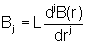
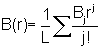
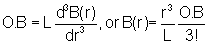
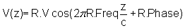
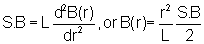

The Lucretia lattice is pretty complicated compared to most other
accelerator codes, since it has not only the beamline elements
themselves but klystrons, girders, power supplies, and several types of
wakefields to keep track of. For this reason the lattice
generation is the, ahem, "richest" subsystem in Lucretia. The
functions which are useful in generating a lattice are documented below
in alphabetical order.
AddBPMToLcav:
Add one or more HOM-BPMs to an RF structure.
stat = AddBPMToLcav(
element_number, num_bpm )
adds num_bpm HOM BPMs to BEAMLINE{element_number} if
BEAMLINE{element_number} is an RF structure, and returns stat{1} ==
1. If BEAMLINE{element_number} is some other type of element,
stat{1} == 0 is returned.
AddMoverToGirder:
Add a mover to a girder which doesn't currently have one.
[stat,G2] =
AddMoverToGirder( dofs, G1 )
takes girder structure G1, adds a mover with the degrees of freedom
specified in the dofs vector, and returns the mover-ized girder as
G2. If G1 has a mover, it is deleted and replaced. Returned
status is +1 unless an invalid dofs vector is specified, in which case
returned status is 0 and no action is taken. The mover degrees of
freedom are: 1 == x, 2 == xz angle (yaw), 3 == y, 4 == yz angle
(pitch), 5 == z, 6 == xy rotation (tilt); dofs == [1 3 6] would add an
x-y-tilt mover to a girder.
AssignToGirder:
Assign elements to a girder.
stat = AssignToGirder(
element_list, girderno, is_long )
assigns the elements in element_list to girder # girderno. If
girderno already exists, the elements are added to any already assigned
to it; otherwise the girder is created and the elements are
assigned. If girderno == 0, the girder assignments of the
elements in element_list are cleared (ie, they are "taken off" their
girders). Any elements in element_list which are not appropriate
for assignment to a girder (ie, drifts and markers) are ignored. After
assignment the girder support positions (GIRDER{}.S)
are calculated; if is_long == 0, S = the longitudinal center of the
elements on the girder (ie support is at a point in S at the center);
if is_long == 1, S is a vector with the upstream- and downstream-most
points of all the elements (ie, support is at the ends). Returned
status is +1 if successful, 0 (failure) if an element on the list
already has a conflicting assignment, -1 if the list is all stuff that
doesn't get girder assignments (ie, markers and drift spaces).
AssignToKlystron:
Assign elements to a klystron.
stat = AssignToKlystron(
element_list, klysno )
assigns the elements in element_list to klystron # klysno. If the
klystron already exists, the elements are added to any already assigned
to it; if it does not exist, it will be created. If klysno == 0,
the klystron assignments of the elements in the element_list are
cleared from both the BEAMLINE and KLYSTRON data structures. If
any inappropriate devices are in the element_list (ie, anything other
than an LCAV or a TCAV), an error results and stat{1} == 0. If
any device
in element_list already has a klystron assignment, an error will result
and stat{1} == 0 (unless klysno == 0). Barring those situations,
stat{1} will be returned with value +1 (success).
AssignToPS:
Assign elements to a power supply.
stat = AssignToPS(
element_list, psno )
assigns the elements in element_list to power supply # psno. If
the powe supply already exists, the elements are added to any already
assigned
to it; if it does not exist, it will be created. If psno == 0,
the power supply assignments of the elements in the element_list are
cleared
from both the BEAMLINE and PS data structures. If any
inappropriate devices are in the element_list (ie, anything which is
not a magnet of some kind), an error results and stat{1} == 0. If
any device in
element_list already has a power supply assignment, an error will
result
and stat{1} == 0 (unless psno == 0). Barring those situations,
stat{1} will be returned with value +1 (success).
stat = AssignToPS(
element_list, psno, ps_index )
allows power supplies of multi-PS devices (dual-PS gradient bends, etc)
to be assigned, ie, use ps_index == 2 to assign the second power supply
of all dual-PS devices in element_list.
BPMStruc:
Get a data structure for a beam position monitor.
B = BPMStruc( L, Name )
returns the structure for a BPM of a given length L and with a desired
name. All other parameters including resolution are instantiated
with value 0.
CollStruc:
Get a data structure for a collimator.
C = CollStruc( L, xgap,
ygap, shape, Tilt, Name )
returns the structure for a collimator with length L, horizontal and
vertical half-gaps xgap and ygap, xy rotation angle Tilt, and a
selected Name. Parameter shape is a string indicating the desired
geometry, with supported values being "Ellipse" and "Rectangle".
All other parameters including thickness in radiation lengths (Lrad)
are instantiated with value 0.
ConvertGirderToLong:
Transforms a girder from "short" (supported at a point in S) to "long"
(supported at 2 points in S).
stat =
ConvertGirderToLong( igird )
sets girder igird's S positions to a vector with S(1) == the S position
of the upstream face of the upstream-most element on the girder, and
S(2) == the S position of the downstream face of the downstream-most
element on the girder. Returned status stat{1} == +1 if no
problems, 0 if the girder does not exist or has no elements.
CoordStruc:
Return the data structure of an arbitrary change in the coordinate axes.
C = CoordStruc( dx,
dtheta, dy, dphi, dz, dpsi, name )
returns the structure for a change in the coordinates. Changes
dx, dtheta, dy, dphi, and dpsi are the horizontal position, angle in
the xz plane, vertical position, angle in the yz plane, and angle in
the xy plane, respectively. Change dz is a change in reference
time, applied to the beam during tracking. At the moment there's
not actually a field for change in the longitudinal coordinate of the
accelerator axis itself, but if there's demand for one I'll add it.
CorrectorStruc:
Return the data structure of a dipole corrector magnet.
S = CorrectorStruc(
L, B, tilt, type, name )
returns the structure for a corrector with length L, integrated
strength B, xy rotation angle tilt, and the desired name. If
type==1, the returned structure is for a horizontal corrector ("XCOR"),
otherwise it will be for a vertical corrector ("YCOR"). All other
parameters are instantiated with value 0.
DrifStruc:
Return the structure for a drift space.
D = DrifStruc( L, name )
returns a structure for a drift of length L with the desired
name. All other parameters are instantiated with value 0.
DeckTool:
Class containing various methods for handling deck parsing
routines. See class in Matlab for full list of public methods, main
methods listed below. Currently only XSIF decks are supported, others
to be added in future.
Similar to XSIFParse - read in deck file to Lucretia format optionally
specifying line, twiss, beam definitions. Returns Lucretia Initial
structure for first BEAMLINE element.
DT.WriteDeck(Initial,filename,linename)
Write an XSIF deck (similar to a MAD8 "saveline" file) from the
currently in-memory Lucretia BEAMLINE. Provide a Lucretia Initial
structure corresponding to the first element and a linename for the
generated deck.
DualPSGradientBend
Convert the structures for gradient bends from single power supply to
dual power supply type.
DualPSGradientBend(
istart, iend )
locates all gradient bend magnets in BEAMLINE between istart and iend,
inclusive, and converts them from single power supply to dual power
supply (with the first PS driving the dipole term and the second PS
driving the focusing term). At the same time, dB is expanded from
1 x 1 to 1 x 2. Bend magnets with no gradient data slot (ie
size(B) == 1 x 1) are ignored by DualPSGradientBend. The second
power supply can be assigned using the function AssignToPS.
findcells:
Search a cell array of data structures for particular fields and/or
field values.
index = findcells(
cellarray, field )
searches array cellarray for any cells which have a field with the
selected name. Their index values are returned.
index = findcells(
cellarray, field, value )
returns the index numbers of all cells which have a field of the
selected name, AND for which the value of that field is the desired
value. The value may contain the wildcard character, "*".
index = findcells(
cellarray, field, [], start, end )
index = findcells(
cellarray, field, value, start, end )
perform the same search, but in this case only cell members from start
to end inclusive are searched.
Function findcells was written by A. Terebilo for the Accelerator
Toolbox (AT), and is
included in Lucretia by permission of the author.
GetIndicesBySPosition:
Find the list of elements which have S positions within a specified
range.
list =
GetIndicesBySPosition( smin, smax )
returns the indices in BEAMLINE of all elements which have S >= smin
and S<= smax.
list =
GetIndicesBySPosition( smin, smax, imin, imax )
returns the indices in beamline of all elements which have indices
between imin and imax which satisfy the S-position criterion.
This latter version is useful in cases in which multiple beamlines are
simultaneously stored in BEAMLINE -- in this case, there can be several
ranges of elements with the same S positions.
GetKlystronsInRange:
Find the set of klystrons that support elements within a given range.
determines which klystrons support elements from istart to iend
inclusive in BEAMLINE, and returns their index numbers. In the
event that one or more of those klystrons also supports elements
outside the selected range, stat{1} == -2, otherwise stat{1} == 1.
GetPSInRange:
Find the set of power supplies that support elements within a given
range.
[stat,pslist] =
GetPSInRange( istart, iend )
determines which power supplies support elements from istart to iend
inclusive in BEAMLINE, and returns their index numbers. In the
event
that one or more of those power supplies also supports elements outside
the
selected range, stat{1} == -2, otherwise stat{1} == 1.
GirderStruc:
Return the data structure for an element girder.
[stat,G] = GirderStruc( )
returns the data structure for a girder with no mover, with all data
values instantiated to 0.
[stat,G] = GirderStruc(
dofs )
returns a girder with a mover, where dofs is defined as in AddMoverToGirder. All data values
including mover step sizes are instantiated to zero.
InstStruc:
Return the data structure for a beamline instrument.
W = InstStruc( L, class,
name )
returns the structure for an instrument of length L, with the desired
name and class (here class is a string which can be any of the
following: 'INST', 'BLMO', 'PROF', 'WIRE', 'SLMO', 'IMON').
All instruments behave identically regardless of which of the
instrument classes they belong to. All other data values in the
structure are instantiated to 0.
MarkerStruc:
Return the data structure for a marker point.
M = MarkerStruc( name )
returns the structure for a marker point with the desired name.
All other data values are instantiated to 0.
MovePhysicsVarsToKlystron:
Exchange parameter definitions between klystrons and their
supported elements.
stat =
MovePhysicsVarsToKlystron( klyslist )
sets the Ampl of each KLYSTRON in the list klyslist equal to the sum of
voltages on the elements supported by that klystron, and the Phase of
each KLYSTRON equal to the mean phase of all elements supported; in
exchange, the Volt parameter of the supported devices is rescaled such
that the product KLYSTRON.Ampl * BEAMLINE.Volt is conserved, and
similarly the element Phase is converted to a phase offset from the
KLYSTRON phase so that KLYSTRON.Phase + BEAMLINE.Phase is
conserved. The KLYSTRON AmplSetPt and AmplStep are scaled by the
same factor as the KLYSTRON.Ampl. In essence, all of the voltage
and "master phase" information is moved from the elements to the
klystron, and the element's Volt and Phase become a dimensionless scale
factor and phase offset from the master, respectively.
Possible status values are stat{1} == 1 (success), stat{1} == 0 (list
includes klystrons with index numbers < 1 or > length(KLYSTRON)).
Function RenormalizeKlystron
inverts the procedure, returning the KLYSTRON amplitude to a
dimensionless scale factor and the phase to zero, the BEAMLINE Volt to
the element's total voltage, and the BEAMLINE Phase to the total phase.
MovePhysicsVarsToPS:
Exchange parameter definitions between a power supply and its supported
elements.
stat =
MovePhysicsVarsToPS( PSlist )
sets the Ampl of each PS on the list equal to the sum of all B values
of all magnets supported by the PS, and in exchange rescaling the B
values such that PS.Ampl * BEAMLINE.B is conserved. The PS SetPt
and Step values are scaled by the same factor as the PS.Ampl.
This converts the nominally-dimensionless PS amplitude to the sum of
strengths of the supported magnets, and the nominally-dimensonful B
values to scale factors.
Possible status values are stat{1} == 1 (success), stat{1} == 0 (list
includes power supplies with index numbers < 1 or > length(PS)).
Function RenormalizePS inverts the
procedure, restoring power supply
amplitudes to 1 and returning the true strength of each element to that
element's B parameter.
MultStruc:
Return the data structure for a general multipole magnet.
M = MultStruc( L, B,
Tilt, PoleIndex, Angle, aperture, Name )
returns the data structure for a multipole which has parameters defined
as follows:
L = length
B = vector of multipole integrated strengths
Tilt = vector of multipole tilts wrt the magnet
coordinate axes
PoleIndex = vector of multipole component indices (0
= dipole, 1 = quad, 2 = sextupole, etc)
Angle = x and y design bending angles
aperture = half-gap of magnet
Name = desired name.
Vectors B, Tilt, and PoleIndex must have the same length: B(j),
Tilt(j), and PoleIndex(j) are the strength, rotation, and component
index of a particular multipole component. The components can be
in any order, since PoleIndex is used to figure out which component is
which rather than position in the B vector. All data values other
than those specified above are instantiated to 0.
The convention used for the integrated strength of the jth component is
given by:

This is similar to the MAD convention in that factorials are required
to compute the field at a given distance from the center of the magnet
from the multipole components:

OctuStruc:
Return the data structure for an octupole magnet.
O = OctuStruc( L, B, Tilt,
aperture, name )
returns a structure for an octupole magnet with length L, integrated
octupole field B, xy rotation angle Tilt, half-gap aperture, and the
requested name. All other data values are instantiated to
0. The relationship between the Octupole B data field and the
magnetic field of the magnet are:

ParseFrequencyDomainTLR:
Parse a file containing data for a transverse long-range wakefield
stored in the frequency domain:
opens the selected file, parses the long-range wakefield data, and
returns it in structure W. Argument BinWidth determines the
longitudinal slice spacing within a bunch (in units of sigmas) to be
used when considering the variation in the wakefield kick over the
length of the bunch (ie, BinWidth == 0 means apply the same voltage to
the entire bunch, BinWidth == 1 means compute the actual kick every 1.0
sigz and apply that, etc) -- for more information see the Wakefields page. The file is assumed
to be stored in Jones format, with comments indicated by the '#' sign
and data on the modes which make up the wakefield arranged in 3,4, or
5 columns as follows: central frequency [GHz], Q of the x
polarization[--], Kick Factor (V/C/m^2),
frequency split between the 2 polarizations [GHz], Q of the y
polarization. In the return
structure W, the frequencies will be converted to MHz. If the 4th
and 5th columns are absent, the x polarizatoin Q will be used for
both polarizations and the 2 polarizations will have the same
frequency. Returned
status will be stat{1} == +1 if successful, or 0 if unable to open the
file or incorrect file format.
ParseSRWF:
Parse a file containing data for a short range wakefield stored in the
time domain:
[stat,W] = ParseSRWF(
filename, BinWidth )
opens the selected file, parses the wakefield data, and returns it in
structure W. Argument BinWidth determines the longitudinal slice
spacing within a bunch (in units of sigmas) to be used when convolving
the beam with the wakefield (ie, BinWidth == 0.1 means divide the beam
into bins with 0.1 sigz width and compute the voltage at each
bin). For more information on BinWidth see the Wakefields
page. The file is assumed to be in MAD8Acc/LIAR format:
comments are indicated by '(', '#', '!', or '%', and data is in 3
columns: index #, z distance behind driving particle [m], kick
factor (V/C/m for longitudinal wakes, V/C/m^2 for transverse).
Returned status will be stat{1} == +1 if successful, or 0 if unable to
open the file or incorrect file format detected.
QuadStruc:
Return the data structure for a quadrupole magnet.
Q = QuadStruc( L, B, Tilt,
aper, name )
returns a quad structure with length L, integrated strength B, xy
rotation angle Tilt, half-gap aper, and the requested name. All
other data values are instantiated to 0. The magnetic field
convention is given by:
rescales the Ampl, AmplStep, and AmplSetPt of a given KLYSTRON such
that Ampl == 1, and sets the Phase of the Klystron to 0; to preserve
the lattice integrity, the BEAMLINE.Volt parameter of every element
energized by the klystron will be scaled by the inverse factor, and its
phase will be incremented by the Phase of the klystron prior to
renormalization. Note that MovePhysicsVarsToKlystron takes a list
of KLYSTRON entries as its argument, while RenormalizeKlystron takes
only 1 klystron as its argument. Returned status values are
stat{1} == +1 for success, 0 for klysno out of range of the KLYSTRON
array.
rescales the Ampl, Step, and SetPt of a given PS such that Ampl == 1,
and scales the BEAMLINE.B parameter of every magnet energized by the PS
by the inverse factor. Note that MovePhysicsVarsToPS takes a list
of PS entries as
its argument, while RenormalizePS takes only 1 power supply as its
argument. Returned status values are stat{1} == +1 for success, 0
for
klysno out of range of the PS array.
RFStruc:
Return the data structure for a linear acceleration element ("LCAV").
R = RFStruc( L, V,
phi, freq, srwf_z, srwf_t, eloss, aper, name )
returns the data structure for an accelerating element with length L,
voltage V [MV], phase phi [rad/2pi], fundamental mode frequency freq
[MHz], indices into WF.ZSR and WF.TSR given by srwf_z and srwf_t,
respectively, loss factor eloss (V/C), half-gap aper, and the desired
name. When the data structure is populated the phase will be
converted to degrees and the loss factor will be normalized to the
structure length (ie, V/C/m is the unit of the stored loss parameter);
if srwf_z is zero then the SRWF_Z tracking flag will be set to 0,
otherwise it will be 1; similarly if srwf_t is zero then the SRWF_T
tracking flag will be set to 0, otherwise to 1. All other data
values will be instantiated to 0. The phase convention for
acceleration is the SLAC convention:

RFStruc instantiates the RF structures with zero HOM-BPMs. To add
HOM-BPMs to an RF structure, use the function AddBPMToLcav.
SBendStruc:
Return the data structure for a sector bend magnet.
B = SBendStruc( L, B,
Angle, E, H, hgap, fringe, tilt, name )
returns a data structure for a sector bend with arc length L, with the
arguments defined as follows:
B: either a scalar, in which case the integrated bending
field in T.m, or else a 1 x 2 vector, in which case the integrated
bending field followed by the integrated focusing field in T.
Angle: design bending angle in radians.
E: either a scalar or a 1 x 2 vector of pole face rotation
angles, if scalar the same angle is used for entrance and exit,
otherwise E(1) == entrance, E(2) == exit.
H: pole face rotation, either a scalar or 1 x 2 vector as
for E.
hgap: half gap, either a scalar or a 1 x 2 vector as for E.
fringe: fringe field integral as defined in MAD, either a
scalar or a 1 x 2 vector as for E.
tilt: design xy rotation.
name: desired name string.
All other data values are instantiated to 0.
SetElementBlocks:
Identify and mark all logical "blocks" of elements.
stat = SetElementBlocks(
start, end )
[stat,blocks] =
SetElementBlocks( start, end )
examines the elements from start to end inclusive and identifies
"blocks", which are sets of elements which are contiguous and contain
no drifts with nonzero length. Each element in a block is
assigned a Block field, which contains the start and end element
numbers of that block. The block becomes a unit of misaligned
accelerator intermediate between the single element and the
girder. Blocks are discussed in more detail here.
Return variable stat is a status cell array, with stat{1} == +1 for
success, or 0 if the start and end indices are invalid. Optional
return argument blocks is a cell array containing all the identified
blocks.
SetElementSlices:
Identify and mark all locations where a single physical element is
represented by several longitudinal segments.
stat = SetElementSlices(
start, end )
[stat,slices] =
SetElementSlices( start, end )
examines the elements from start to end inclusive and identifies
situations in which a single physical element is represented by
multiple longitudinal segments ("slices"). Each "slice" of the
physical element is given a new field, Slices, which contains a list of
all BEAMLINE entries which are slices of that element (ie, if
BEAMLINE{2}, BEAMLINE{4}, and BEAMLINE{6} are slices of a single
element, then each of those BEAMLINE members will have
BEAMLINE{}.Slices = [2 4 6]). This allows the user to assign
strength errors to all of the slices of a single device in a sensible
manner. Slices are discussed in more detail here.
Return variable stat is a status cell array, with stat{1} == +1 for
success, or 0 if the start and end indices are invalid. Optional
return argument slices is a cell array containing all the identified
slices.
SetFloorCoordinates:
Compute the coordinates of the elements with respect to a non-curved
Cartesian coordinate system, and apply them to the element data
structures.
stat =
SetFloorCoordinates( start, end, initial )
computes the floor coordinates of all elements, both upstream and
downstream faces, from start to end inclusive. Argument initial
is a 1 x 6 vector containing initial values [X Y Z Theta Phi Psi],
where X Y Z are in meters and Theta Phi Psi are in radians. The
function adds fields Coordi, Coordf, Anglei, Anglef to each element in
BEAMLINE between start and end inclusive, where the Coord fields
contain the X Y and Z coordinates in meters and the Angle fields
contain the Theta Phi and Psi angles in radians. Returned
Lucretia status cell stat has stat{1} == 1 always.
If argument start > argument end, then the vector of coordinates is
treated as the downstream-face coordinates of the last element; this
allows the user to specify "target" end coordinates for a beamline or
sub-beamline.
returns vectors of the floor coordinates of the elements as well as
status. Each vector starts with the upstream face coordinates of
the first element, followed by the downstream face coordinates of all
elements, so the length of the vectors == number of elements requested
+ 1.
SetGirderByBlock:
Assign elements to girders, with all the members of each block assigned
to the same girder.
stat = SetGirderByBlock(
start, end, is_long )
assigns the elements from start to end inclusive to girders, with each
identified block being assigned to its own girder and all members of a
given block assigned to the same girder (see SetElementBlocks or the Slices and Blocks page for discussion on
alignment blocks). Any element which does not have a Blocks field
is treated as its own block (ie, it gets its own girder). If a
block extends upstream beyond the start or downstream beyond the end
index, the full block will still be assigned to a girder (ie, the start
and end limits will be overridden by the requirement that the block be
assigned to a common girder). If is_long == 1 then all girders
are long (ie supported at their upstream/downstream extremes),
otherwise they are all short (ie, supported at their longitudinal
centers) -- see ConvertGirderToLong
for more information.
Return status values are stat{1} == +1 for success, or 0 if the
start/end values are invalid or if an element in the range from
start:end already has a conflicting girder assignment.
SetGirderBySPos:
Assign elements to girders according to their S positions.
stat = AssignGirderBySPos(
start, end, ds, is_long )
assigns all elements from start to end inclusive to girders of
approximate total length ds. The length is approximate because an
element has to be either entirely on a girder or entirely off, so if a
girder of exact length ds would terminate in the middle of an element,
it is extended to the end of the element in question. Also,
SetGirderBySPos always assigns all the elements in a block to the same
girder, which can also change the girder length from the desired
value. As with SetGirderByBlock, assigning blocks to common
girders will override the requested start and end indices if these
happen to fall in the middle of a block. If is_long == 1 then all
girders are long (ie supported at their
upstream/downstream extremes), otherwise they are all short (ie,
supported at their longitudinal centers) -- see ConvertGirderToLong
for more information.
Return status values are stat{1} == +1 for success, or 0 if the
start/end values are invalid or if an element in the range from
start:end already has a conflicting girder assignment.
SetIndependentPS:
Assign elements to power supplies such that each magnet has its own PS.
stat = SetIndependentPS(
start, end )
assigns all magnets from start to end inclusive to independent power
supplies. All slices of a given physical magnet will be assigned
to a common supply, see SetElementSlices
and the Slices and Blocks web page for
more information. If an element has slices which are upstream of
the desired start or downstream of the desired end, they will be
included on the element's supply (ie, keeping slices on a common PS
overrides the user's selected start and end values in the event of a
conflict).
Return status values are stat{1} == +1 for success, or 0 if the
start/end values are invalid or if an element in the range from
start:end already has a conflicting PS assignment.
SetKlystrons:
Assign RF elements to klystrons.
stat = SetKlystrons(
start, end, elem_per_klys )
assigns all RF elements from start to end inclusive to klystrons, with
elem_per_klys total elements assigned to each klystron. If an RF
element is represented by 2 or more slices, all slices will be powered
by 1 klystron, and all of the slices together will count as 1 element
for purposes of assignment counts (ie, if you represent each RF
structure with 2 entries in BEAMLINE, and elem_per_klys == 4, there
will be a total of 8 BEAMLINE entries powered by each klystron).
In the event of a conflict between requested start/end points and
powering all slices of an element by a common klystron, keeping the
slices together will take priority.
Return status values are stat{1} == +1 for success, or 0 if the
start/end values are invalid or if an element in the range from
start:end already has a conflicting KLYSTRON assignment.
SetSPositions:
Assign S positions to elements.
SetSPositions( start, end,
S0 )
assigns S positions to elements from start to end inclusive, beginning
with S0. These are true S positions in that they represent the
length of the design beam path (ie, they use the arc length through a
sector bend as the S increment through the bend, and not the chord
length).
SetTrackFlags:
Assign values to tracking flags.
list =
SetTrackFlags(FlagName, FlagValue, start, end )
sets the named tracking flag to the requested value on all elements
from start to end inclusive which have that tracking flag. Return
variable list is a list of element indices which posess the relevant
tracking flag and which therefore have been set by this function.
list =
SetTrackFlags(FlagName, FlagValue, list0)
sets the requested track flag on all elements indexed in list0 which
have the relevant tracking flag. If the user requests a non-zero
SynRad tracking flag, the flag will not be set on any elements which
have L == 0 and Lrad == 0.
SextStruc:
Return the data structure for a sextupole magnet.
S = SextStruc( L, B, Tilt,
aper, name )
returns a sextupole structure with length L, integrated strength B, xy
rotation angle Tilt, half-gap aper, and the requested name. All
other
data values are instantiated to 0. The magnetic field convention
is
given by:

SolenoidStruc:
Return the data structure for a solenoid magnet.
S = SolenoidStruc( L, B,
aper, name )
returns a solenoid structure with length L, integrated longitudinal
magnetic field B, half-aperture aper, and the requested name.
XSIFToLucretia:
Parse a deck in the Extended Standard Input Format (XSIF) and generate
an appropriate Lucretia lattice therefrom.
[stat,Initial] =
XSIFToLucretia( filename )
reads the requested XSIF file and generates a Lucretia lattice in
BEAMLINE for the line in the file which has been selected via the XSIF
USE command. If the XSIF file specifies any short-range wakefield
files, these are also parsed into global data structure WF, with
default BinWidth of 0.1. If the deck contains appropriate BEAM
and BETA0 statements, an initial condition structure Initial will be
generated (see InitCondStruc
for more
details). Returned status stat{1} == 1 if successful; 0 if a
parser failure (couldn't open file, no beamline USEd, syntax errors,
etc); -1 if an unparsable wakefield file was specified in the deck, if
an unsupported element class was detected (in which case a drift will
be substituted), if there was no initial momentum specification in the
deck (in which case P == 1.0 GeV/c will be used).
reads the requested XSIF file and expands the requested beamline,
overriding any USE statements in the file itself. If the named
line cannot be expanded stat{1} == 0.
reads the requested XSIF file and expands the requested beamline, and
also uses the requested BETA0 and BEAM statements to generate
Initial. If the requested BETA0 or BEAM statement was not usable,
or if the initial momentum must be set to default value of 1 GeV/c
because no BETA0 or BEAM statement is present or because the one which
is present has no energy/momentum value,
stat{1} == -1.
XSIFToLucretia parses XSIF GKICK elements as coordinate changes.
Since a GKICK, by default, is the change in values which are applied to
the beam at the location of the GKICK, Lucretia interprets the GKICK
parameters as being the negative of the actual coordinate changes,
which are stored in the Coord data structure.
XSIFToLucretia uses the XSIFParse
function, which is a mex-ed version of the standalone
XSIF parser. XSIFParse is not technically a part of Lucretia,
but it is a rather efficient way to load lattices which are written in
a MAD8-like syntax.